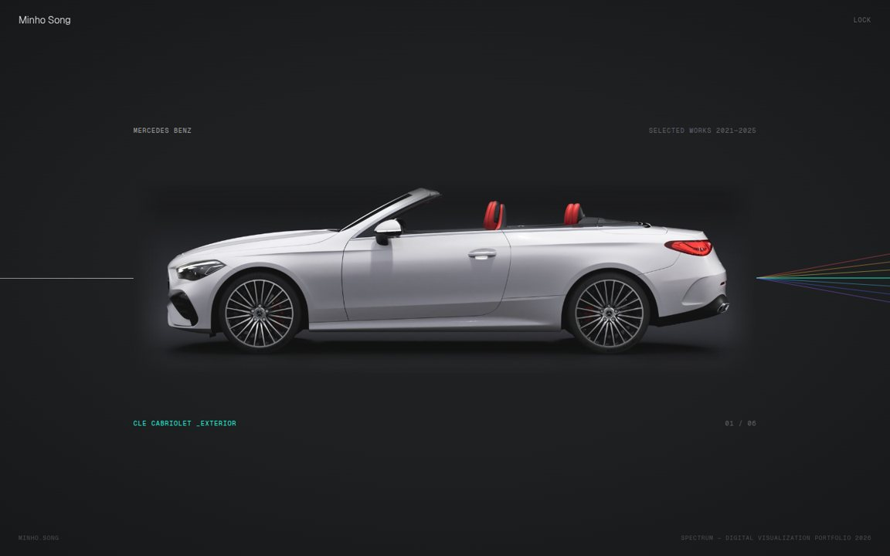
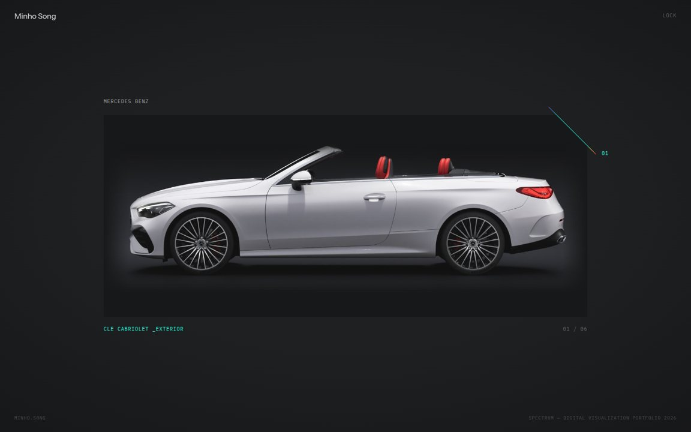
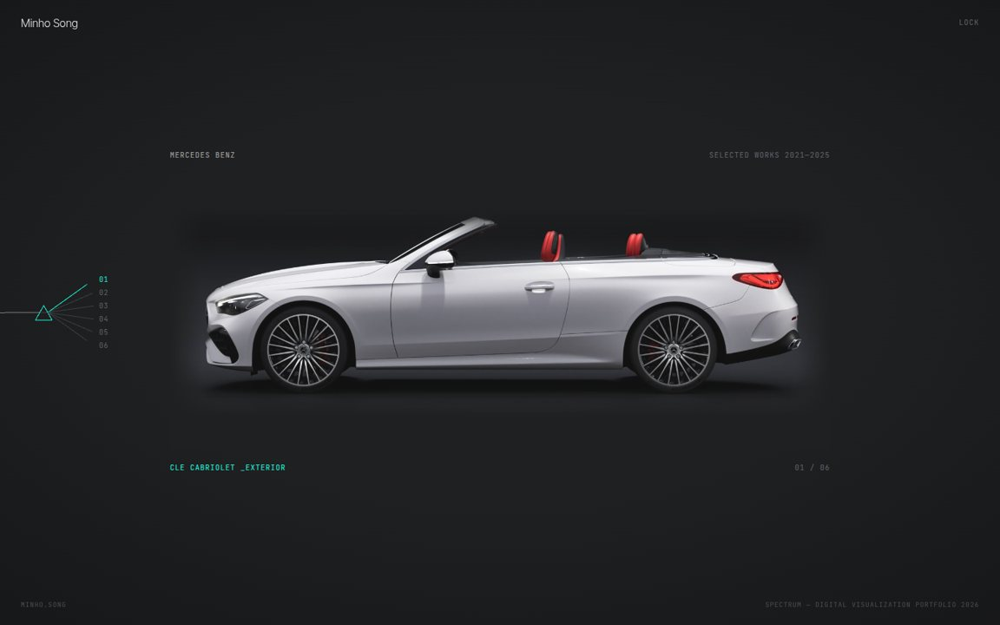
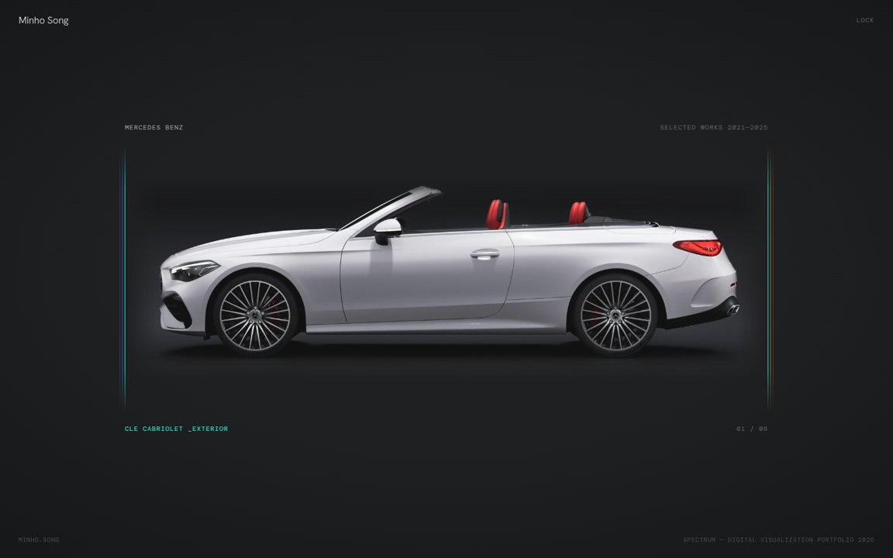
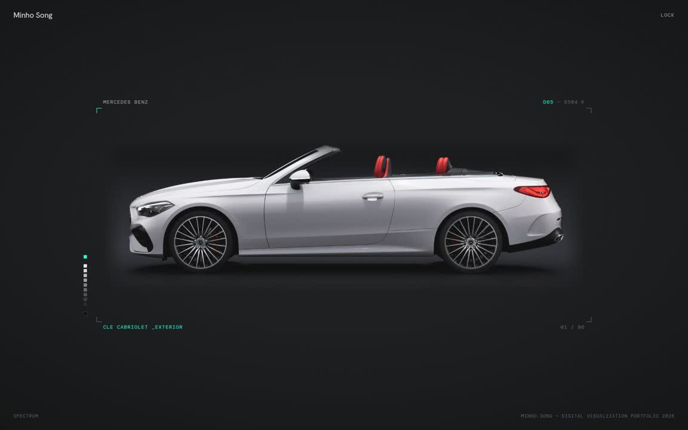

One white beam passes behind the car and leaves it as a spectrum — only in the air.
흰 빛줄기 하나가 차 뒤를 지나, 차를 빠져나온 여백에서만 스펙트럼으로 갈라진다. 가운데 꺾이지 않은 선이 민트.
Geist · Geist Mono
Minho Design · Portfolio · Template proposals · 2026.11.10
Round 2 after your notes: horizontal plates (2.4:1 / 21:9), the dark charcoal and mint sampled from your site and PDF, spectrum only as a small extra. Each template is the same content — the index and the Mercedes-Benz CLE Cabriolet detail — built in its own visual language, with a DESIGN.md that fixes colour, type, spacing and components. Pick one, or name the parts to combine.
Lock screen: any input + Enter




